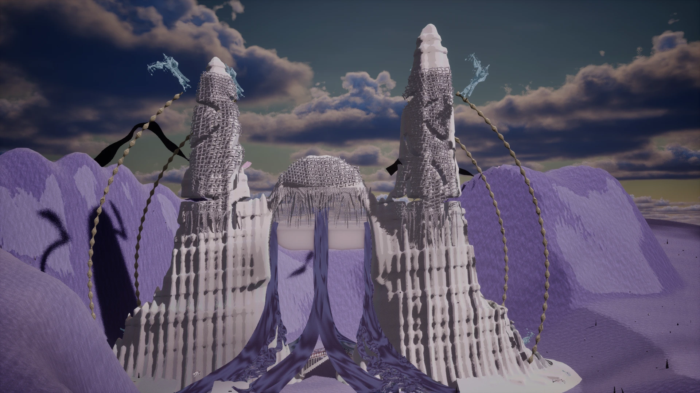

Brennan Shepherd · Environment & Technical Artist
I build worlds that feel like songs.
I create stylized fantasy environments in Unreal Engine, with Houdini procedural systems, materials, and sculpted architectural detail behind every scene. Featured imagery is drawn from earlier and current Melodia studies.
Portfolio paths
Four ways into the work.
Art first. The process is one click away.

Featured environment case study · UE5.8 / Procedural worldbuildingFaraway MotherA reviewed nine-plate study of the Heart Gate, Cathedral V2, tailored architecture and living terrain.